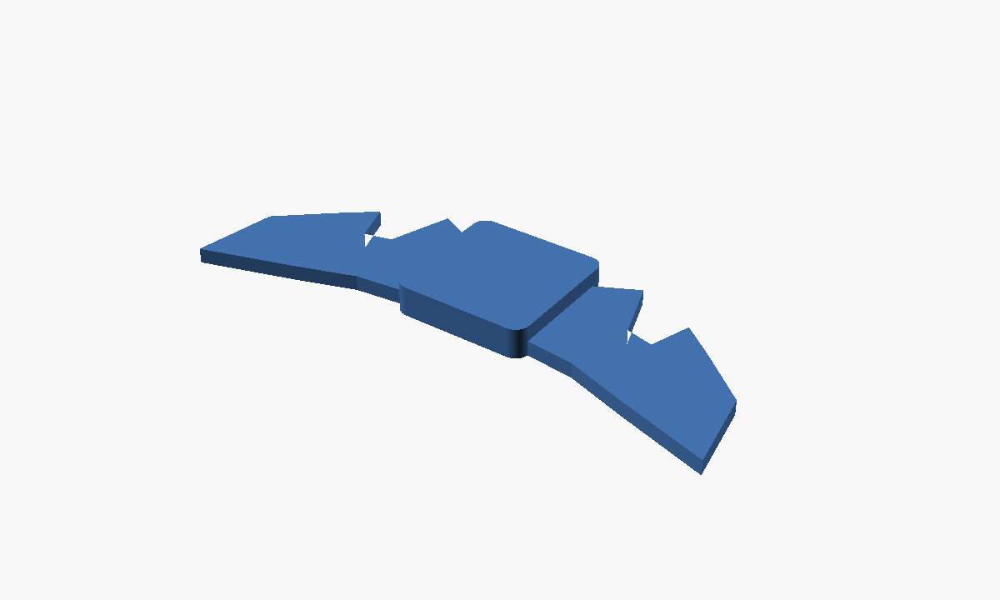

3D-Druck · Batman-inspiriert · Prototyp 01
Batwing-Heckspoiler
Ein selbst konstruierter Fledermaus-Heckspoiler zum Aufstecken auf ein LEGO-kompatibles Fahrzeug. Für den Bambu Lab A1 mit 0,2-mm-Düse entworfen – als offenes, parametrisches Experiment.

Modell herunterladen
Die STL-Datei lässt sich in Bambu Studio öffnen. In der OpenSCAD-Datei können insbesondere socket_d und socket_depth angepasst werden.
Das Modell wird aus der veröffentlichten OpenSCAD-Datei mit OpenSCAD generiert. Quelle: GitHub.
Passung erst prüfen: Die vier Steckaufnahmen sind noch nicht an konkreten LEGO-Teilen validiert. Nicht mit Gewalt auf Noppen drücken. Ein kleiner Passungstest vor dem endgültigen Druck ist sinnvoll.
Maße & Druck
- Abmessungen
- 78 × 26 × 4,4 mm
- Anschluss
- 4 Noppen (2 × 2)
- Noppenraster
- 8,0 mm
- Steckaufnahme Ø
- 5,10 mm
- Stecktiefe
- 2,20 mm
- Drucker
- Bambu Lab A1
- Düse
- 0,2 mm
- Material (Startwert)
- PLA
- Schichthöhe (Startwert)
- 0,10 mm
- Stützen
- nicht vorgesehen
Privates, eigenständiges Fan-Projekt; keine Verbindung zu LEGO oder den Rechteinhabern von Batman. Modell-Lizenz: CC0.